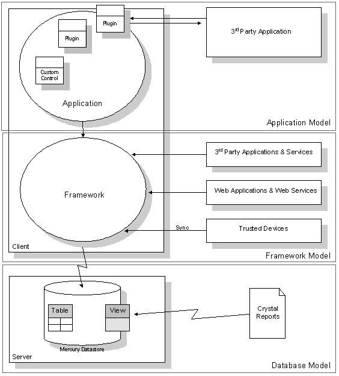

Act! is a highly extensible platform that allows rich customization and integration with other products. The Act! application empowers users to customize the software for their needs, and enables third party developers to extend that courtesy to their clientele and other markets.
Act! is comprised of three major components: The database, the framework, and the application. Each of these components allow developers to access and customize data, and to integrate with, automate, extend, and replace portions of the Act! application. The unique needs and interactions of third party developers largely determine which Act! integration paths to take.
